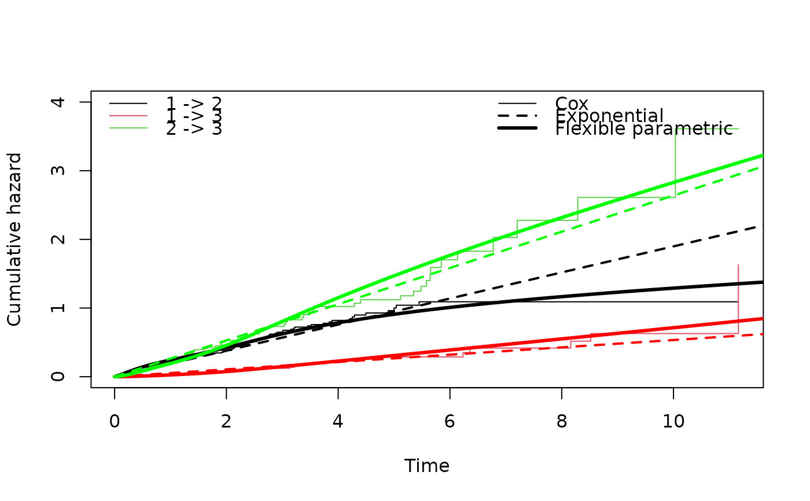

Cumulative intensity function for parametric multi-state models
Source:R/mstate.R
msfit.flexsurvreg.RdCumulative transition-specific intensity/hazard functions for fully-parametric multi-state or competing risks models, using a piecewise-constant approximation that will allow prediction using the functions in the mstate package.
Usage
msfit.flexsurvreg(
object,
t,
newdata = NULL,
variance = TRUE,
tvar = "trans",
trans,
B = 1000
)Arguments
- object
Output from
flexsurvregorflexsurvspline, representing a fitted survival model object.The model should have been fitted to data consisting of one row for each observed transition and additional rows corresponding to censored times to competing transitions. This is the "long" format, or counting process format, as explained in the flexsurv vignette.
The model should contain a categorical covariate indicating the transition. In
flexsurvthis variable can have any name, indicated here by thetvarargument. In the Cox models demonstrated by mstate it is usually included in model formulae asstrata(trans), but note that thestratafunction does not do anything in flexsurv. The formula supplied toflexsurvregshould be precise about which parameters are assumed to vary with the transition type.Alternatively, if the parameters (including covariate effects) are assumed to be different between different transitions, then a list of transition-specific models can be formed. This list has one component for each permitted transition in the multi-state model. This is more computationally efficient, particularly for larger models and datasets. See the example below, and the vignette.
- t
Vector of times. These do not need to be the same as the observed event times, and since the model is parametric, they can be outside the range of the data. A grid of more frequent times will provide a better approximation to the cumulative hazard trajectory for prediction with
probtransormssample, at the cost of greater computational expense.- newdata
A data frame specifying the values of covariates in the fitted model, other than the transition number. This must be specified if there are other covariates. The variable names should be the same as those in the fitted model formula. There must be either one value per covariate (the typical situation) or \(n\) values per covariate, a different one for each of the \(n\) allowed transitions.
- variance
Calculate the variances and covariances of the transition cumulative hazards (
TRUEorFALSE). This is based on simulation from the normal asymptotic distribution of the estimates, which is computationally-expensive.- tvar
Name of the categorical variable in the model formula that represents the transition number. This should have been defined as a factor, with factor levels that correspond to elements of
trans, conventionally a sequence of integers starting from 1. Not required ifxis a list of transition-specific models.- trans
Matrix indicating allowed transitions in the multi-state model, in the format understood by mstate: a matrix of integers whose \(r,s\) entry is \(i\) if the \(i\)th transition type (reading across rows) is \(r,s\), and has
NAs on the diagonal and where the \(r,s\) transition is disallowed.- B
Number of simulations from the normal asymptotic distribution used to calculate variances. Decrease for greater speed at the expense of accuracy.
Value
An object of class "msfit", in the same form as the objects
used in the mstate package. The msfit method
from mstate returns the equivalent cumulative intensities for Cox
regression models fitted with coxph.
References
Liesbeth C. de Wreede, Marta Fiocco, Hein Putter (2011). mstate: An R Package for the Analysis of Competing Risks and Multi-State Models. Journal of Statistical Software, 38(7), 1-30. doi:10.18637/jss.v038.i07
Mandel, M. (2013). "Simulation based confidence intervals for functions with complicated derivatives." The American Statistician 67(2):76-81
See also
flexsurv provides alternative functions designed
specifically for predicting from parametric multi-state models without
calling mstate. These include pmatrix.fs and
pmatrix.simfs for the transition probability matrix, and
totlos.fs and totlos.simfs for expected total
lengths of stay in states. These are generally more efficient than going
via mstate.
Author
C. H. Jackson chris.jackson@mrc-bsu.cam.ac.uk
Examples
## 3 state illness-death model for bronchiolitis obliterans
## Compare clock-reset / semi-Markov multi-state models
## Simple exponential model (reduces to Markov)
bexp <- flexsurvreg(Surv(years, status) ~ trans,
data=bosms3, dist="exp")
tmat <- rbind(c(NA,1,2),c(NA,NA,3),c(NA,NA,NA))
mexp <- msfit.flexsurvreg(bexp, t=seq(0,12,by=0.1),
trans=tmat, tvar="trans", variance=FALSE)
## Cox semi-parametric model within each transition
bcox <- coxph(Surv(years, status) ~ strata(trans), data=bosms3)
if (require("mstate")){
mcox <- mstate::msfit(bcox, trans=tmat)
## Flexible parametric spline-based model
bspl <- flexsurvspline(Surv(years, status) ~ trans + gamma1(trans),
data=bosms3, k=3)
mspl <- msfit.flexsurvreg(bspl, t=seq(0,12,by=0.1),
trans=tmat, tvar="trans", variance=FALSE)
## Compare fit: exponential model is OK but the spline is better
plot(mcox, lwd=1, xlim=c(0, 12), ylim=c(0,4))
cols <- c("black","red","green")
for (i in 1:3){
lines(mexp$Haz$time[mexp$Haz$trans==i], mexp$Haz$Haz[mexp$Haz$trans==i],
col=cols[i], lwd=2, lty=2)
lines(mspl$Haz$time[mspl$Haz$trans==i], mspl$Haz$Haz[mspl$Haz$trans==i],
col=cols[i], lwd=3)
}
legend("topright", lwd=c(1,2,3), lty=c(1,2,1),
c("Cox", "Exponential", "Flexible parametric"), bty="n")
}
#> Loading required package: mstate

## Fit a list of models, one for each transition
## More computationally efficient, but only valid if parameters
## are different between transitions.
if (FALSE) { # \dontrun{
bexp.list <- vector(3, mode="list")
for (i in 1:3) {
bexp.list[[i]] <- flexsurvreg(Surv(years, status) ~ 1, subset=(trans==i),
data=bosms3, dist="exp")
}
## The list of models can be passed to this and other functions,
## as if it were a single multi-state model.
msfit.flexsurvreg(bexp.list, t=seq(0,12,by=0.1), trans=tmat)
} # }